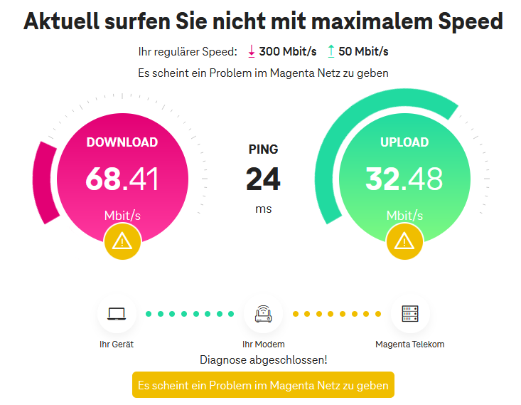

Liebe Community! Mich wuerde interessieren ob es Euch aehnlich geht: In den letzten Wochen bekomme ich - mit Ausnahmen - im Durchschnitt eher 50-100 statt 300mbit Geschwindigkeit (siehe Screenshot anbei). Tipps vom Magenta-Support (a la Modem aus/einschalten bzw. resetten) haben daran nichts geaendert. Feedback aus Graz bzw. Graz/Sankt-Peter ist besonders gefragt. LG!

Am 16.1.2024 um 10:10 schrieb tianpi:Mich wuerde interessieren ob es Euch aehnlich geht:
Hast du schon mal >> hier << geprüft, ob Störungen gemeldet sind?
Wurde schon mal das Antennenkabel bei deinem Modem ausgetauscht (sofern es sich um einen Kabelanschluss handelt)?
Konnten unsere Techniker:innen unter 0676 200 7777 auch keine signalseitigen Einschränkungen feststellen? Hast du da schon mal angerufen?
LG JD.
Hi,
Wenn das INet bei mir hier in St. Peter (wenn es geht) dann habe ich keine Einschränkung - voller Speed gem. Vertrag... Aber leider fällt das INet mittlerweile jeden Tag aus..